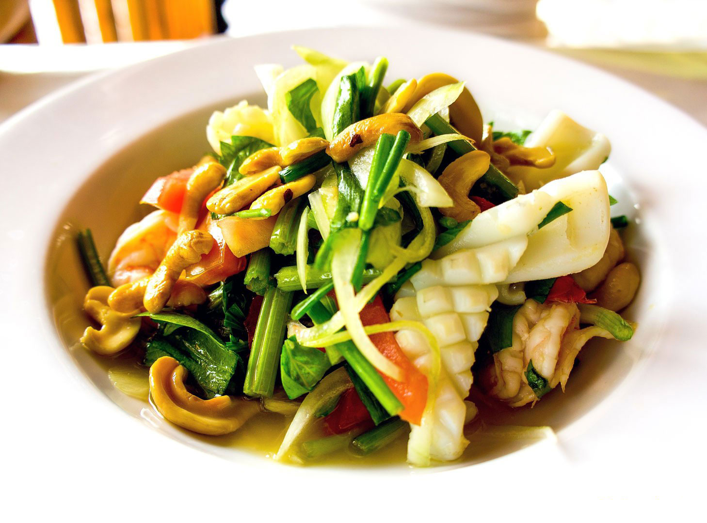
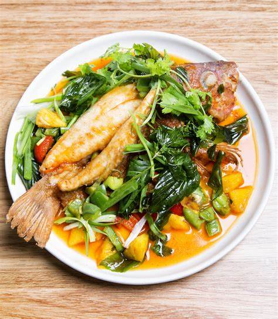

About Us
We Leave A Delicious Memory For You
Just Thai is one of the best, presenting a delicious range of nutritious and genuine Thai food from Thailand's four central regions. Each unique dish is a skillful balance of four harmonic ingredients. Flavors, including sweet, sour, salty, and spicy, with the addition of fresh aromatic herbs.

